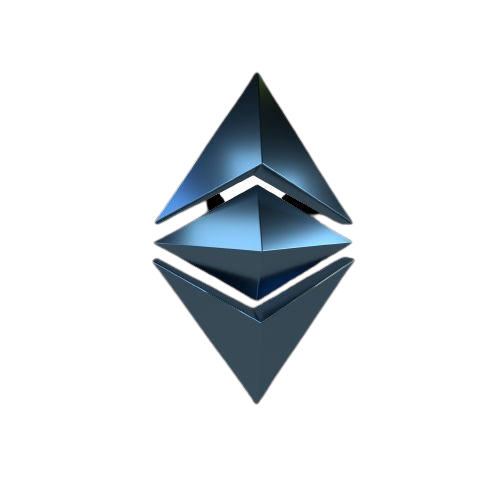

The Ethereum Merge starts on 19th of september, 2022.
WHAT IS THE MERGE?
The Merge is the next step in the evolution of Ethereum. It is an upcoming event that will see the existing execution layer merged with the recently deployed consensus layer (the Beacon Chain) — this will form a mainnet platform secured by proof-of-stake, while still maintaining the original Ethereum state. Right now, there are two independent blockchains for Ethereum operating in isolation. These are the current proof-of-work (POW) Ethereum chain and a separate proof-of-stake Beacon Chain.